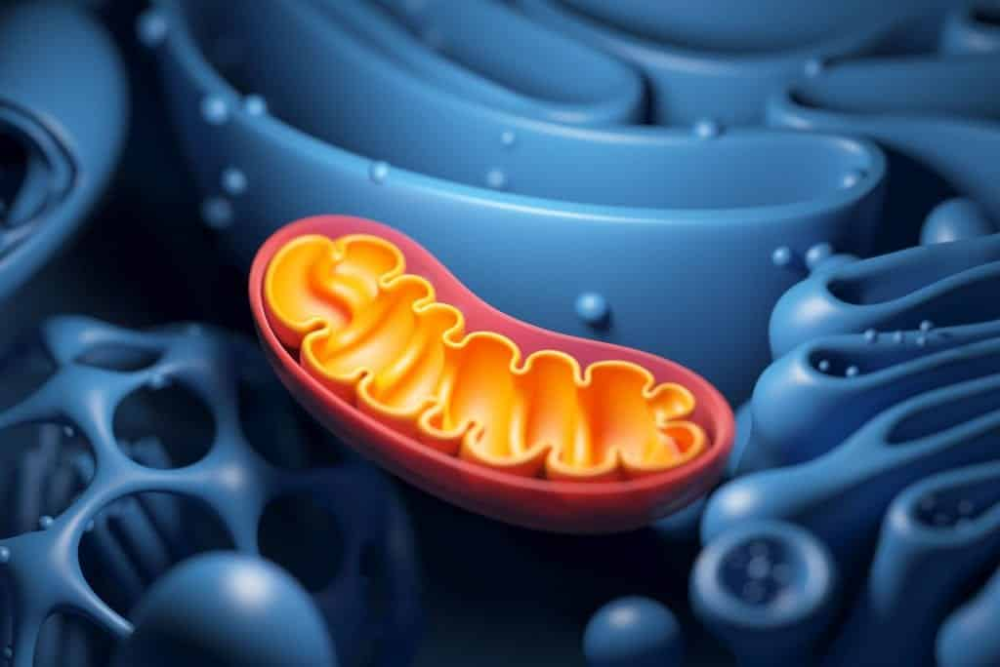
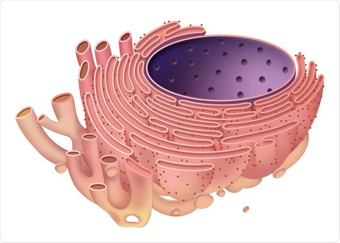
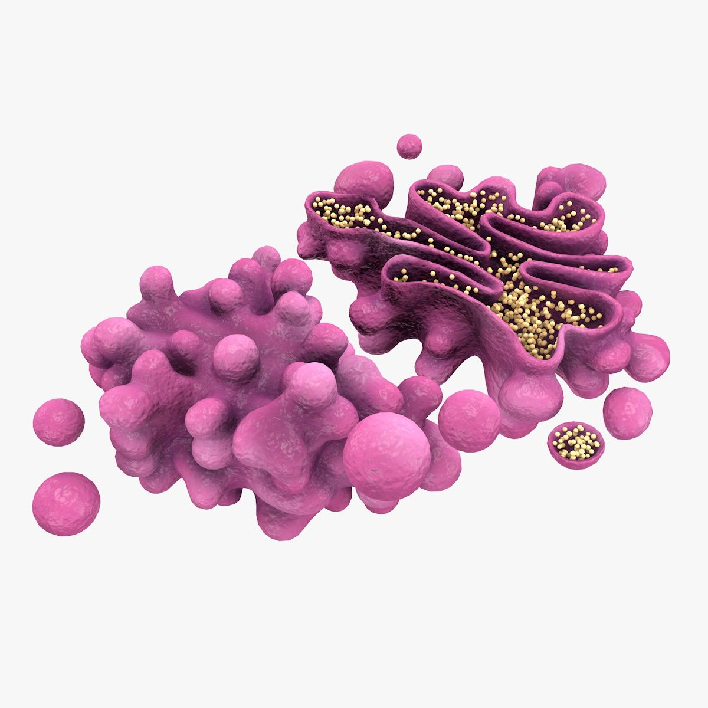
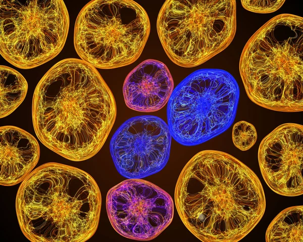
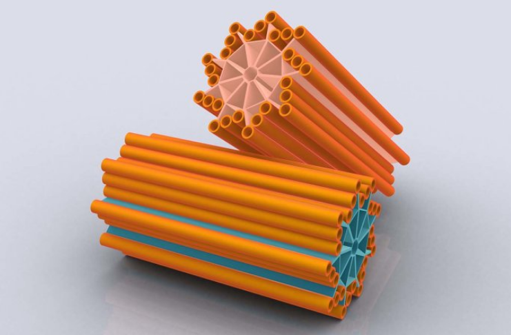
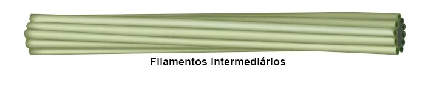

CITOPLASMA
O citoplasma é uma região da célula localizada entre o núcleo e a membrana plasmática. Ele é composto por um líquido viscoso e transparente chamado de citosol. O citoplasma é composto por todas as organelas intracelulares e o citosol.

O citoplasma é uma região da célula localizada entre o núcleo e a membrana plasmática. Ele é composto por um líquido viscoso e transparente chamado de citosol. O citoplasma é composto por todas as organelas intracelulares e o citosol.
São organelas compostas por membrana dupla, sendo uma externa e uma interna que apresenta muitas dobras, as chamadas cristas mitocondriais. As mitocôndrias apresentam pequenas moléculas de DNA, que se apresentam como filamentos duplos e circulares, carregando alguns genes que são transmitidos para as organelas filhas após a sua reprodução (fissão)
Sua função é realizar a respiração celular, que produz a maior parte da energia utilizada nas funções vitais. A primeira etapa acontece no citosol da célula e as duas últimas nas suas membranas internas.

São organelas com membranas dobradas, similares a sacos achatados. São dois os retículos, o retículo endoplasmático rugoso e o liso.
A função principal do retículo endoplasmático rugoso (RER) é realizar a síntese e ativação das proteínas, além de transportar para outras partes da célula. Já o retículo endoplasmático liso tem a função de participar da produção de lipídios (gordura), especialmente os fosfolipídios, que compõem a membrana plasmática.

Também chamado complexo de Golgi ou ainda complexo golgiense, é composto de discos achatados empilhados, formando bolsas membranosas.
Suas funções são transformar, armazenar e exportar proteínas sintetizadas no RER.

Os lisossomos são envolvidos apenas pela bicamada lipídica e no seu interior há enzimas digestivas.
Sua função é digerir moléculas orgânicas como lipídios, carboidratos, proteínas e ácidos nucleicos (DNA e RNA).

São organelas celulares não membranosas presentes nas células procarióticas e eucarióticas.
Eles atuam principalmente na regeneração celular, controle metabólico e produção de proteínas.

São organelas com estrutura cilíndrica encontradas nas células eucarióticas.
Eles participam da divisão
celular pela capacidade de duplicação quando ocorre a mitose e meiose, migrando para os pólos da célula após a
duplicação
São responsáveis pela formação dos cílios e flagelos e pela organização do fuso acromático durante a divisão celular.
"
Também chamados de microfilamentos, são constituídos por actina, formando espirais que medem cerca de 7 nm de diâmetro.
Dentre as funções desses filamentos, destacamos a manutenção, bem como a alteração da forma da célula, movimentação da célula (movimento amebóide) e, no citoplasma (células vegetais), contração e divisão celular.

Medindo entre 8 nm e 12 nm de diâmetro, são constituídos por mais de 50 tipos diferentes de proteínas, como a queratina e a desmina.
Estão relacionados com a manutenção da forma da célula, formação da lâmina nuclear (reveste a membrana nuclear internamente e ancoram cromossomos e poros nucleares) e ancoragem de diversas organelas no citoplasma da célula.

Qualquer tipo de movimento do corpo, dos músculos dos braços aos neurônios que transportam esses sinais para o
cérebro,
depende de um grande conjunto de proteínas que são chamadas de “motores moleculares”.
Fundamentalmente, motores moleculares são proteínas
que convertem energia química em movimento mecânico e
têm funções diferentes, dependendo de sua tarefa. No entanto, por serem muito pequenas,
os mecanismos exatos
de como essas moléculas se coordenam são pouco conhecidos.

O citoesqueleto é uma rede de fibras presente no citoplasma das células. Nas células eucarióticas, o citoesqueleto é constituído por microtúbulos, filamentos de actina e filamentos intermediários. Em células procarióticas, pode ser observada uma rede de fibras que se assemelha ao citoesqueleto das células eucarióticas.
O citoesqueleto apresenta inúmeras funções dentro da célula, tais como: Manutenção da forma da célula, principalmente em células que não apresentam parede celular (células animais), suporte mecânico da célula, manipulação da membrana, como na formação de vacúolos alimentares,movimento da célula (movimento amebóide), formação de cílios e flagelos, formação do fuso mitótico, movimento de organelas e vesículas no interior da célula.
.png)
O citoplasma da célula procarionte, uma célula que não possui núcleo, corresponde a toda a região delimitada pela membrana plasmática. Ele é formado pelo citosol e contém o DNA e vários ribossomos, organelas relacionadas com a síntese de proteínas. No citoplasma dessas células, não é possível encontrar organelas membranosas, como retículo endoplasmático e complexo golgiense.
O citoplasma de uma célula eucarionte, por sua vez, é muito mais complexo. Ele pode ser definido como a região localizada entre a membrana plasmática e a membrana que envolve o núcleo. A constituição do citosol é semelhante à das células procariontes.